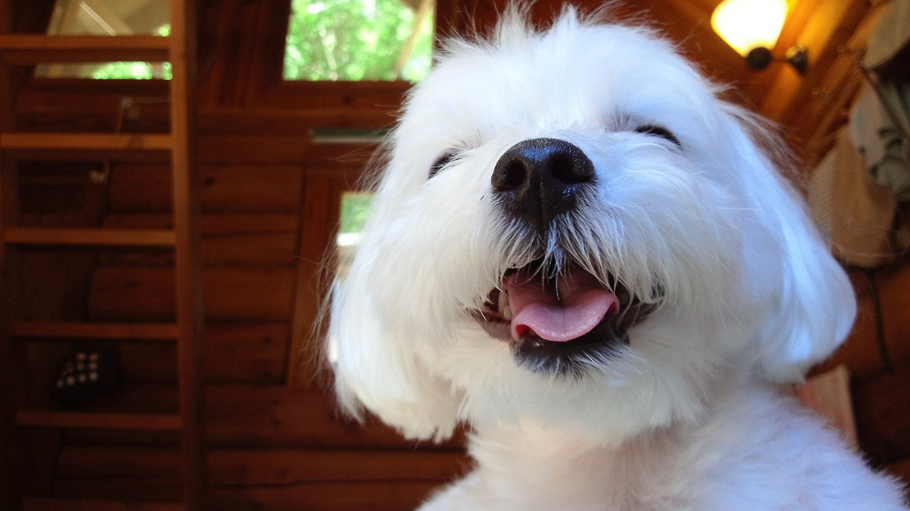

Мальтійська болонка
Мальтийская болонка, или мальтезе (итал. Maltese), — порода собак. Относится к породам болонок или бишонов. Мальтийская болонка — это небольшая собака. Породу считают древней и историю её происхождения связывают с островом Мальта
Почитати детальніше